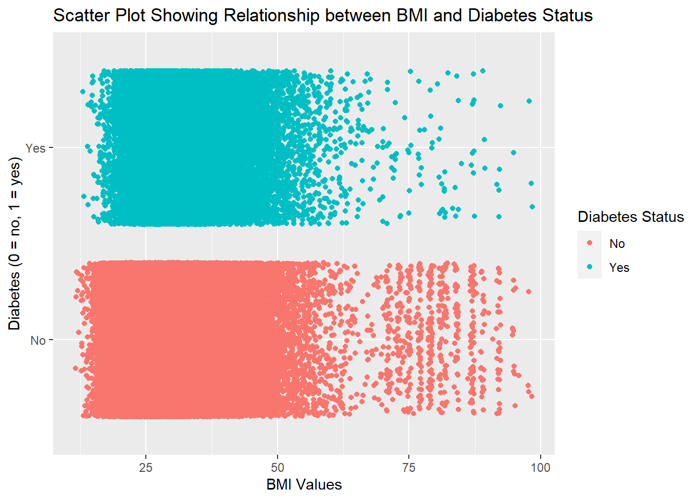

library(tidyverse)
library(ggplot2)
diabetes <- as_tibble(read_csv("diabetes_binary_health_indicators_BRFSS2015.csv")) |>
mutate(Diabetes_binary = as.factor(Diabetes_binary),
HighBP = as.factor(HighBP),
HighChol = as.factor(HighChol),
CholCheck = as.factor(CholCheck),
Smoker = as.factor(Smoker),
Stroke = as.factor(Stroke),
HeartDiseaseorAttack = as.factor(HeartDiseaseorAttack),
PhysActivity = as.factor(PhysActivity),
HvyAlcoholConsump = as.factor(HvyAlcoholConsump),
GenHlth = as.factor(GenHlth), PhysHlth = as.factor(PhysHlth),
DiffWalk = as.factor(DiffWalk), Sex = as.factor(Sex),
Age = as.factor(Age)) |>
select(Diabetes_binary, BMI, HighBP, HighChol, CholCheck, Smoker, Stroke, HeartDiseaseorAttack,
PhysActivity, HvyAlcoholConsump, GenHlth, PhysHlth, DiffWalk, Sex, Age)
levels(diabetes$Diabetes_binary) <- c("No", "Yes")
levels(diabetes$HighBP) <- c("No", "Yes")
levels(diabetes$HighChol) <- c("No", "Yes")
levels(diabetes$CholCheck) <- c("No", "Yes")
levels(diabetes$Smoker) <- c("No", "Yes")
levels(diabetes$Stroke) <- c("No", "Yes")
levels(diabetes$HeartDiseaseorAttack) <- c("No", "Yes")
levels(diabetes$PhysActivity) <- c("No", "Yes")
levels(diabetes$HvyAlcoholConsump) <- c("No", "Yes")
levels(diabetes$GenHlth) <- c("Excellent", "Very Good", "Good", "Fair", "Poor")
levels(diabetes$DiffWalk) <- c("No", "Yes")Exploring Diabetes Data Set
Introduction
Before we begin exploring our data, let’s give you some information about the data set and its variables, as well as the purpose of this document and how it will relate to our modeling.
Diabetes Health Indicators Data set
The data set we will be using throughout the entirety of our project will be the Diabetes Binary Health Indicators data set. This is a clean data set of 253,680 survey responses conducted by the CDC, in which the target variable is Diabetes_binary - where 0 denotes no diabetes, and 1 denotes pre-diabetes or diabetes. Also included in this data set, are 21 feature variables, that are not balanced, in which can hopefully be used to explain whether or not a person will have diabetes.
We will only be interested in exploring 14 out of the 21 feature variables, and the next section will dive deeper into those that we will use.
Important Variables
Below, is a list of the important variables I have identified that should be beneficial to explore in relation to our response variable of interest - Diabetes_binary (explained above):
HighBP: Do you have high blood pressure? 0 = no; 1 = yes (categorical)HighChol: Do you have high cholesterol? 0 = no; 1 = yes (categorical)CholCheck: Have you had your cholesterol checked in past 5 years? 0 = no; 1 = yes (categorical)BMI: Body Mass Index value (numeric)Smoker: Have you smoked at least 100 cigarette’s in their life? 0 = no; 1 = yes (categorical)Stroke: Have you ever been told you had a stroke? 0 = no; 1 = yes (categorical)HeartDiseaseorAttack: Have you ever had coronary heart disease (CHD) or myocardial infarction (MI)? 0 = no; 1 = yes (categorical)PhysActivity: Not including you job, ave you done any physical activity in past 30 days? 0 = no; 1 = yes (categorical)HvyAlchoholConsump: Do you consume at least 14 (men) or at least 7 (women) drinks per week? 0 = no; 1 = yes (categorical)GenHlth: What would you say your general health is? 1 = excellent; 2 = very good; 3 = good; 4 = fair; 5 = poor (categorical/ordinal)PhysHlth: Denotes how many days over the past 30 days you felt your physical health was bad (illness/injury)DiffWalk: Do you have serious difficulty walking or climbing stairs? 0 = no; 1 = yes (categorical)Sex: What is your sex? 0 = female; 1 = male (categorical)Age: How old are you? 13-level age category (categorical)
Purpose
The purpose of this document is to explore the variables listed above, specifically in relation to our response variable of interest Diabetes_binary. We will look at numerical/categorical summaries, as well as visualizations to see if we can highlight any important relationships or patterns in the data. This will translate to our modeling page, where we will take what we have learned from our data exploration and apply it to our model building. Here, we will identify potential influential variables and use them in our models to determine there true effect in classifying whether or not an individual has diabetes. Now, it is time to start exploring our data
Read/Manipulate Data Set
Here, we will be reading in the raw csv file, and performing some data cleaning/manipulation tactics to prepare it for data exploration. This is also where we will load in some useful R packages that will be essential for the completion of this document.
As mentioned above, we are only going to be using 14 of the 21 feature variables from the data set. These were chosen based off of personal interest in exploring their relationship to the diabetes response.
Exploratory Data Analysis
In this section, we will be doing our data exploration on our important variables to look at their relationship with our response variable of interest. Usually, we would split our data into training and test sets, and do EDA on the training set; however, we will do EDA on the entire data set. To start, there is only one numeric variable in this data set, BMI (Body Mass Index), so we will explore that first.
Numeric Variable Exploration
diabetesBMI <- diabetes |>
select(Diabetes_binary, BMI)
summary(diabetesBMI$BMI) Min. 1st Qu. Median Mean 3rd Qu. Max.
12.00 24.00 27.00 28.38 31.00 98.00 Looking at a quick summary of the BMI variable, we can begin to see that most values will be clustered within 12-31 (75% of values); however, there will be 25% of the values that will be spread out across a range of 31 to 98. Let’s dive a bit deeper into this variable:
bmiPlot <- ggplot(diabetesBMI)
bmiPlot + geom_histogram(aes(x = BMI), color = "Black", fill = "Red") +
labs(title = "Histogram of BMI Counts", x = "BMI Values") `stat_bin()` using `bins = 30`. Pick better value with `binwidth`.The histogram above, reaffirms the previous finding, and we can see we have right-skewed distribution. Let us explore its relationship with the response variable:
bmiPlot +
geom_jitter(aes(x = BMI, y = Diabetes_binary, color = factor(Diabetes_binary))) +
labs(x = "BMI Values", y = "Diabetes (0 = no, 1 = yes)",
title = "Scatter Plot Showing Relationship between BMI and Diabetes Status",
color = "Diabetes Status")
Based off of this scatter plot, there is really no glaring patterns here that I can see. Let us move to the categorical predictors to see if there is any glaring relationships.
Categorical Variable Exploration
In this section, we are going to look at all of the categorical variables from our list of important variables. This will give us a better look to see which variables could be the most important in relation to the response. For a recap of variable descriptions, see the Important Variables section.
We are first going to look at the categorical variables with only 2-levels. Here, we will create a 2x2 contingency table from which we will turn into a data frame. We will take this data frame, group the data by the feature variable, and look at the the percentage of individuals who do/don’t have diabetes across each level of the feature variable:
diabetesCat <- diabetes |>
select(-BMI)
results <- list()
for (i in names(diabetesCat)[-c(1, 10, 11, 14)]) {
var <- i
contTable <- table(diabetesCat$Diabetes_binary, diabetesCat[[i]])
contDf <- as.data.frame(contTable)
colnames(contDf) <- c("Diabetes", var, "Count")
percentages <- contDf |>
group_by(!!sym(var)) |>
mutate(Percentage = Count / sum(Count) * 100)
results[[i]] <- percentages
}
for (i in names(results)) {
print(results[[i]])
cat("\n")
}# A tibble: 4 × 4
# Groups: HighBP [2]
Diabetes HighBP Count Percentage
<fct> <fct> <int> <dbl>
1 No No 136109 94.0
2 Yes No 8742 6.04
3 No Yes 82225 75.6
4 Yes Yes 26604 24.4
# A tibble: 4 × 4
# Groups: HighChol [2]
Diabetes HighChol Count Percentage
<fct> <fct> <int> <dbl>
1 No No 134429 92.0
2 Yes No 11660 7.98
3 No Yes 83905 78.0
4 Yes Yes 23686 22.0
# A tibble: 4 × 4
# Groups: CholCheck [2]
Diabetes CholCheck Count Percentage
<fct> <fct> <int> <dbl>
1 No No 9229 97.5
2 Yes No 241 2.54
3 No Yes 209105 85.6
4 Yes Yes 35105 14.4
# A tibble: 4 × 4
# Groups: Smoker [2]
Diabetes Smoker Count Percentage
<fct> <fct> <int> <dbl>
1 No No 124228 87.9
2 Yes No 17029 12.1
3 No Yes 94106 83.7
4 Yes Yes 18317 16.3
# A tibble: 4 × 4
# Groups: Stroke [2]
Diabetes Stroke Count Percentage
<fct> <fct> <int> <dbl>
1 No No 211310 86.8
2 Yes No 32078 13.2
3 No Yes 7024 68.2
4 Yes Yes 3268 31.8
# A tibble: 4 × 4
# Groups: HeartDiseaseorAttack [2]
Diabetes HeartDiseaseorAttack Count Percentage
<fct> <fct> <int> <dbl>
1 No No 202319 88.0
2 Yes No 27468 12.0
3 No Yes 16015 67.0
4 Yes Yes 7878 33.0
# A tibble: 4 × 4
# Groups: PhysActivity [2]
Diabetes PhysActivity Count Percentage
<fct> <fct> <int> <dbl>
1 No No 48701 78.9
2 Yes No 13059 21.1
3 No Yes 169633 88.4
4 Yes Yes 22287 11.6
# A tibble: 4 × 4
# Groups: HvyAlcoholConsump [2]
Diabetes HvyAlcoholConsump Count Percentage
<fct> <fct> <int> <dbl>
1 No No 204910 85.6
2 Yes No 34514 14.4
3 No Yes 13424 94.2
4 Yes Yes 832 5.84
# A tibble: 4 × 4
# Groups: DiffWalk [2]
Diabetes DiffWalk Count Percentage
<fct> <fct> <int> <dbl>
1 No No 188780 89.5
2 Yes No 22225 10.5
3 No Yes 29554 69.3
4 Yes Yes 13121 30.7
# A tibble: 4 × 4
# Groups: Sex [2]
Diabetes Sex Count Percentage
<fct> <fct> <int> <dbl>
1 No 0 123563 87.0
2 Yes 0 18411 13.0
3 No 1 94771 84.8
4 Yes 1 16935 15.2Looking at the above data sets, we can see that there are some variables that should influence whether or not an individual has diabetes. One of the more interesting findings that we see here is in the HvyAlcoholConsump data set. Those who do not drink heavily have a larger percentage of diabetes than those who do drink heavily. There are also some findings that are inline with what we would expect. For example, 22% of individuals with high cholesterol also have diabetes, whereas only ~8% of individuals without high cholesterol have diabetes.
Now, let’s look at the categorical variables that have more than two levels. We will first look at the age variable. Let us do the same thing we did above, but as bar plots. We will see how the percentages of people with diabetes changes across the different age groups.
ageTable <- table(diabetesCat$Age, diabetesCat$Diabetes_binary) |>
as.data.frame()
colnames(ageTable) <- c("Age", "Diabetes", "Count")
ageTable <- ageTable |>
group_by(Age) |>
mutate(Percentage = Count / sum(Count) * 100) |>
ungroup()
ggplot(ageTable, aes(x = Age, y = Percentage, fill = Diabetes)) +
geom_bar(stat = "identity", position = "dodge") +
labs(x = "Age Category", y = "Percentage",
title = "Percentage of Individuals with Diabetes for each Age Group",
fill = "Diabetes") From this graph, we can see that as we increase our age category, a larger percentage of individuals have Diabetes. Now, let us investigate the General Health variable the same way:
genHlthTable <- table(diabetesCat$GenHlth, diabetesCat$Diabetes_binary) |>
as.data.frame()
colnames(genHlthTable) <- c("GenHlth", "Diabetes", "Count")
genHlthTable <- genHlthTable |>
group_by(GenHlth) |>
mutate(Percentage = Count / sum(Count) * 100) |>
ungroup()
ggplot(genHlthTable, aes(x = GenHlth, y = Percentage, fill = Diabetes)) +
geom_bar(stat = "identity", position = "dodge") +
labs(x = "General Health Category", y = "Percentage",
title = "Percentage of Individuals with Diabetes for each General Health Group",
fill = "Diabetes") This also tells us that as our general health gets worse, the percentage of people with diabetes increases. For the last plot, let us explore the Physical Health variable:
physHlthTable <- table(diabetesCat$PhysHlth, diabetesCat$Diabetes_binary) |>
as.data.frame()
colnames(physHlthTable) <- c("PhysHlth", "Diabetes", "Count")
physHlthTable <- physHlthTable |>
group_by(PhysHlth) |>
mutate(Percentage = Count / sum(Count) * 100) |>
ungroup()
ggplot(physHlthTable, aes(x = PhysHlth, y = Percentage, fill = Diabetes)) +
geom_bar(stat = "identity", position = "dodge") +
labs(x = "Physical Health Category", y = "Percentage",
title = "Percentage of Individuals with Diabetes for each Physical Health Group",
fill = "Diabetes") 
The pattern in this plot is not as noticeable as the others, but we can still see that has the number of days where your physical health was not good, the percentages of having diabetes increase.
#Conclusion
Through this exploratory data analysis of our data, we have investigated several variables’ relationship to the response of interest - Diabetes_binary. Through numerical summaries and scatter plots, contingency tables and bar plots, there have been many findings. Some of the findings that we had were surprising, relative to what we would naturally expect; however, there were many findings entwine to previous knowledge about Diabetes. One of the more surprising findings that we saw had to deal with Heavy Alcohol Consumption (HvyAlcoholConsump). We noticed that of those who did not drink heavily, there was a “large” percentage of people with diabetes; whereas, those who did drink heavily, there was a small percentage of people with diabetes. These types of things are why EDA is so necessary when working with data. It can tell you things that you may not have expected previously, and can help strengthen your capabilities when undergoing analysis.
This concept is exactly what we will be going to do, as you can head to our Model Fitting site to see how we used our EDA to build several different models.